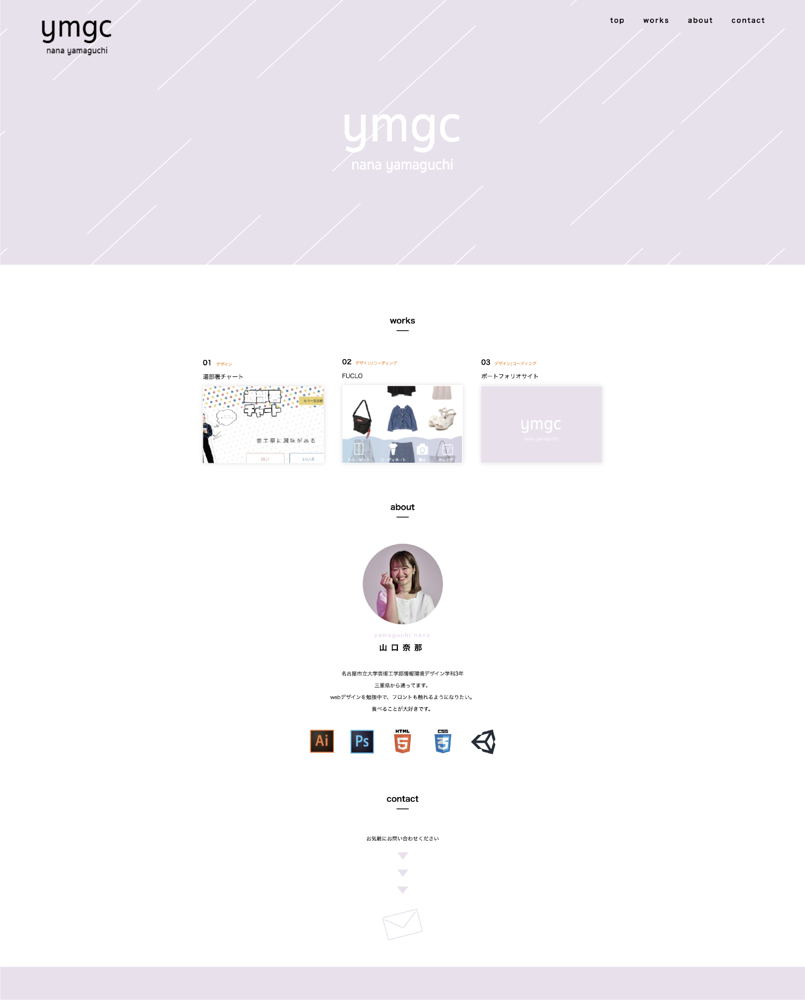
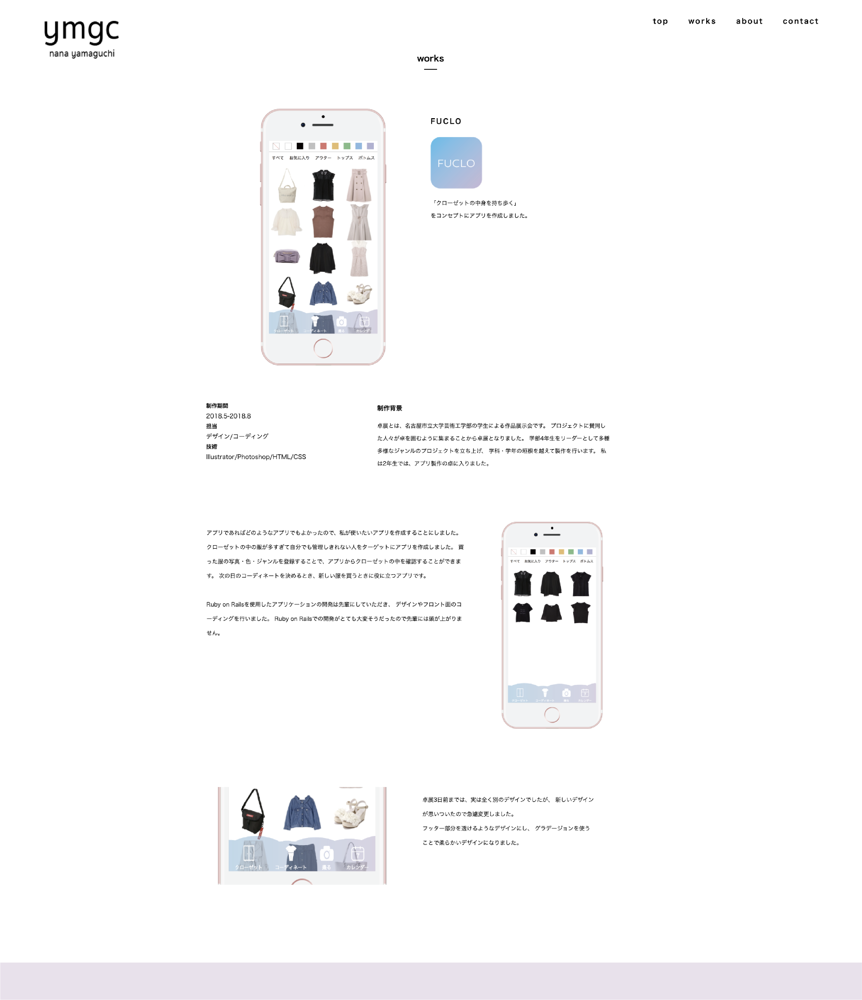

コンセプト
見やすさと操作数の少なさを重視し、
さっと見ることができるデザイン
このサイトを見ていただく企業の方は、多くの学生のポートフォリオを見なければいけないので、時間をかけずに見ることができるサイトを目指しました。
デザイン

デザイン
操作数を少なくするためにサイト全体を1ページで見ることができるような構成にし、ハンバーガーメニューではなくメニューバーをページ上部に固定しました。
見やすくするために必要最低限の情報だけ配置しています。
見やすさや操作性を重視しているためアニメーションは控えめにしています。
また、作品を目立たせたかったのでメインカラーは彩度が低いラベンダーカラーを使用しました。

作品ページは作品の画像を大きく配置し、シンプルなデザインにしました。